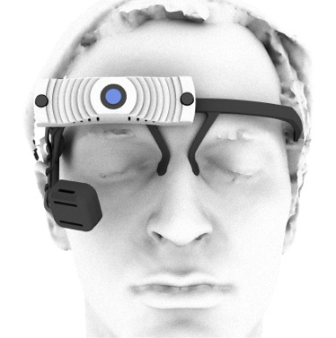

| Rendering |
 |
 |
| Description |
This is the standard version Pupil Headset. Pupil is under constant development.
This means that you will always get the latest version of the hardware and that you will have access to continuous upgrades for the software. |
Pupil One+ comes with an upgraded World Camera, improved cable management, fully enclosed cameras. |
| Specifications |
|
|
| Eye Camera |
Maximum Resolution - 640x360 @ 30 fpsInfrared camera with basic IR-filter |
Maximum Resolution - 640x360 @ 30fpsInfrared camera with custom bandpass IR-filter for improved tracking |
| World Camera |
Maximum Resolution - 1280x720 @ 30fpsView Angle 68 degrees |
Maximum Resolution - 1920x1080 @ 30 fpsCarl-Zeiss OpticsView Angle 90 degrees |
| Design |
Exposed camera boards |
Fully enclosed camera boards |
| Connection |
USB |
USB with improved cable management |
| Material |
PLA |
PLA |
| Weight |
290 grams |
350 grams |
| Price |
|
|
| Individual (Noncommercial) |
280 € + shipping |
480 € + shipping
|
| Academic |
580 € + shipping
|
800 € + shipping
|
| Commercial Enterprise |
Contact us for a quotation |
Contact us for a quotation |
{% endblock price_table %}
{% block software %}
## Software
**Pupil** is a project in active, community driven development and distributed under an OpenSource license. The capture software runs on Linux, MacOS, and Windows. Currently we are actively developing for Linux and MacOS. Windows installations are supported by the Pupil community. You can download the app, plug in your Pupil Headset, and get started!